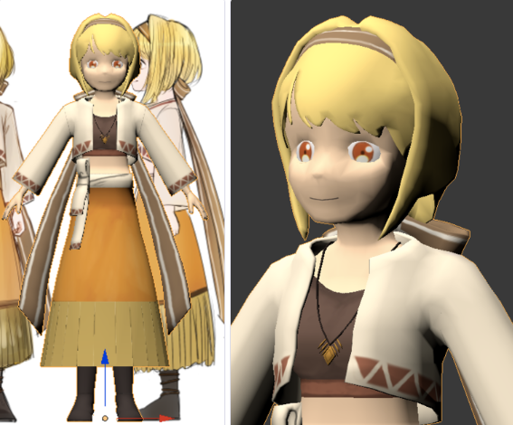

traPで制作されている『Clay Plate's Story』(2017春~)という3Dゲームの主要キャラの一体の『ナディア』です
キャラデザは他の人がやってくれました。
ナディアのモデリング
traPで制作されている『Clay Plate's Story』(2017春~)という3Dゲームの主要キャラの一体の『ナディア』です
キャラデザは他の人がやってくれました。
最初に大まかな感じで作ってみた。
なんか顔面が四角かったのでこれを修正しつつ、他のもろもろの修正を加えた。

最後に、使う表情のテクスチャを書いて終了。